Here are some of my projects and demos that showcase my skills as a game developer specialized in Godot.
This project is a music player with a UNDERTALE/DELTARUNE style UI made in Godot 4. It has a custom user interface where you can play, pause, skip, and adjust the volume of your music files. You can also see the current track's title and duration. These are the features of this project:
(Note: This project is finished and available to download for Windows and Linux. At the moment im working on a new update.)
Note: The first videos provide a good preview of the project's features.
A playable demo built in Godot 4 showcasing custom RPG UI and dialogue systems. There are a few videos of the project features below, it shows the progress of this. This project focuses on system design and UI functionality.
A playable demo built in Godot 3 showcasing a simple inventory system and RPG action UI. This project focuses on system design and UI functionality.
A fast-paced 2D fighting game prototype inspired by classic fighters, developed in Godot. The project focuses on core combat mechanics such as input handling, state-based character logic, hit detection, and animation timing, prioritizing responsiveness and gameplay feel over visual polish. It has a user interface for character selection for 2 players, plus a mini user interface for selecting a color for your character.